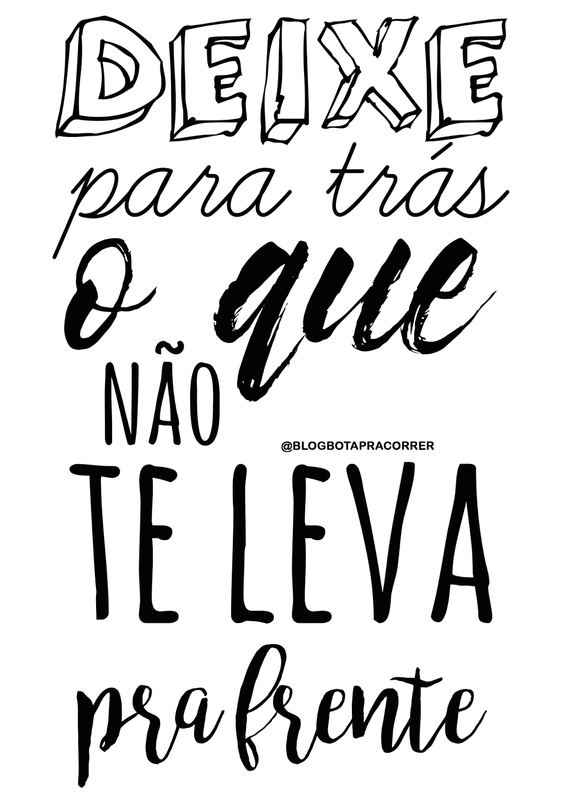

O que é saúde mental?Saúde mental envolve melhorar o bem - estar e qualidade de vida. Infelizmente a saúde mental é pouco entendida pelas pessoas pois muitos carregam idéias distorcidas que foram construídas ao longo da história. E uma delas é associar como "loucura". Muitos diziam que eram doidos e com isso acabavam ficando com a saúde mental afetada.
Como ocorre?Problemas de relacionamentos com os pais, irmãos, professores ou colegas. Frente a um cenário de pandemia e no dia a dia pode afetar a saúde mental, não só dá população brasileira mas como mundialmente.
SintomasMuitas pessoas podem ter os sintomas como irritabilidade, diminuição de concentração, alteração de apetite, medo de morrer, de perder entes-queridos, sensação de tristeza, de impotência, de angústia entre outros...

Solução para ter uma saúde mental excelente1- não se isole;2- reforce os laços familiares e de amizade;3- diversifique os seus interesses;4- mantenha - se intelectualmente e fisicamente ativo;5- consulte seus médicos perante sinais ou sintomas graves;
Lembre-se das adversidades que você já superou, e ainda pode superar. Isso não é um problema, e sim uma solução! não se sinta inseguro, e sim se sinta confiante!